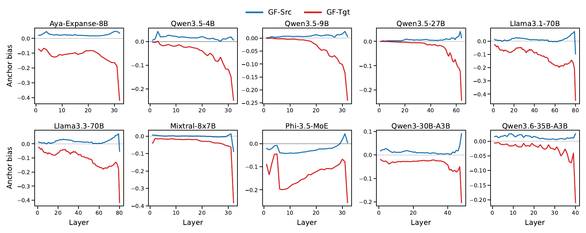
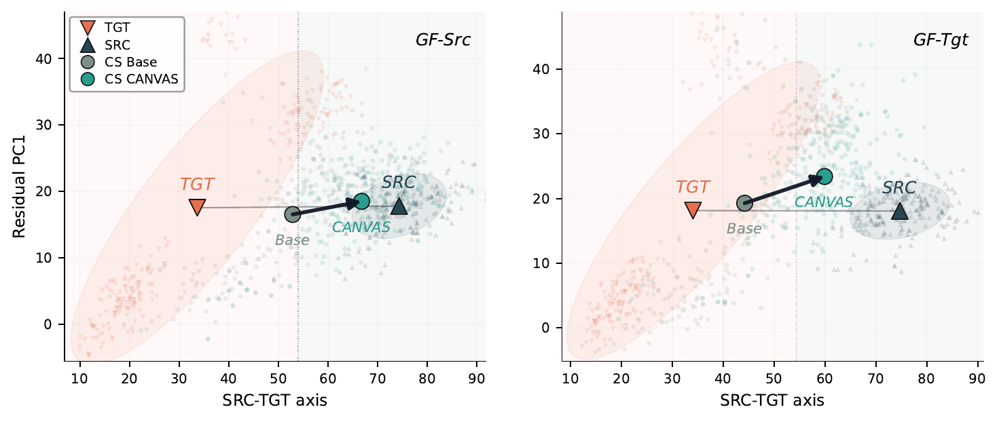
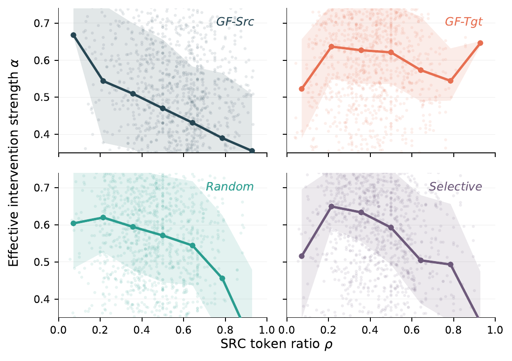

Why look inside code-switched representations?
Code-switching is structured multilingual language use, not random lexical noise. A model can answer a monolingual question yet fail when the same information need is expressed through a mixed-language form. We therefore ask where the mixed-language hidden state sits relative to its matched source-language and target-language counterparts.
Controlled code-switched QA
For each question, we compare source-only, target-only, source-framed CS, and target-framed CS variants. This keeps the factual query fixed while changing the language structure.
From diagnosis to intervention
Anchor Bias measures which monolingual reference the CS state approaches. CANVAS then uses the same internal signal to adjust hidden states without changing the input text or model weights.
CS representations move with the grammatical frame.
Anchor Bias compares the similarity of a CS representation to its source and target monolingual anchors. Positive values indicate source-oriented states; negative values indicate target-oriented states.

Source-canvas alignment during prefill.
CANVAS computes an in-context source-side canvas from the same CS input, estimates target-ward drift, and softly aligns target-language token representations toward that canvas in the upper layers.
Partition tokens
Identify source-language, target-language, and neutral tokens in the user question span.
Build source canvas
Mean-pool source-token hidden states in the control layers to obtain a contextual anchor.
Scale adaptively
Increase correction when the internal alignment score indicates stronger target orientation.
Interpolate hidden states
Steer only target-token representations, then decode from the adjusted prefill cache.
CANVAS improves direct CS answering.
We compare direct CS answering with a random-direction control and the adaptive CANVAS method. The condition columns report adaptive CANVAS minus Base F1.
| Model | Base | Rand | CANVAS | GF-SRC | GF-TGT | Random | Selective |
|---|---|---|---|---|---|---|---|
| Llama3.2-1B | 2.57 | 2.68 | 3.20 | +0.08 | +0.82 | +1.01 | +0.62 |
| Mistral-7B | 4.53 | 4.96 | 5.06 | +0.14 | +0.80 | +0.65 | +0.55 |
| Aya-Expanse-8B | 5.99 | 5.99 | 6.88 | +0.62 | +1.41 | +0.63 | +0.91 |
| Llama3.1-8B | 6.21 | 6.72 | 7.79 | +1.21 | +0.64 | +2.15 | +2.34 |
| Qwen3-30B-A3B | 6.91 | 6.93 | 8.11 | +0.06 | +2.48 | +0.71 | +1.55 |
| Qwen3.5-27B | 14.14 | 14.22 | 15.40 | +0.28 | +1.74 | +0.96 | +2.03 |
| Qwen3.6-35B-A3B | 15.80 | 16.07 | 17.53 | +0.66 | +3.58 | +1.41 | +1.28 |
The correction is visible in hidden-state geometry.
We project CS representations onto the source-target axis and compare Base with CANVAS. The arrows show that the intervention moves CS centroids toward the source-side region while the adaptive coefficient grows for more target-heavy inputs.

